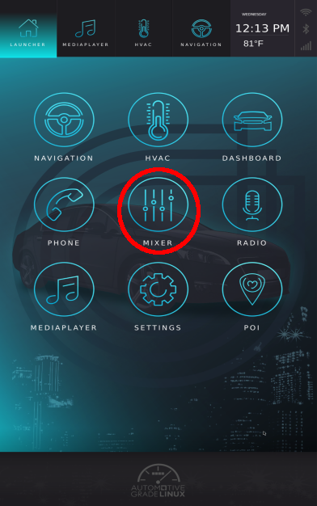
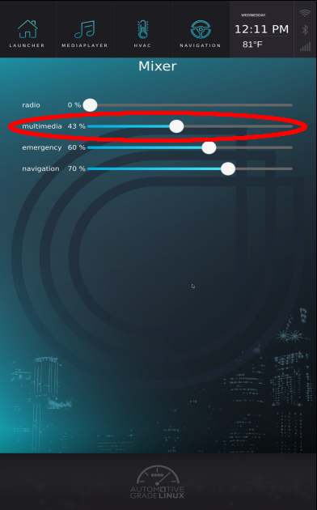

Play Music
Aknowledge roles
To play music you must know which roles you want to use, for music it's going to be the multimedia role.
To display the available roles enter:
4a-api roles
Play command
4a-play must be used like this.
4a-play <file> [role]
So in our example it will look like this:
4a-play Happy_MBB_75.ogg multimedia
Where file is the path to the file that you want to play, role is the role of the 4a-play (multimedia for example).
NOTE: For AGL versions before FF.RC3 you had to specify the device to use. The device that matches with "multimedia" is "hw:0,0,2" (for more details please read the "Get HALs status" section). The command would have been :
4a-play Happy_MBB_75.ogg hw:0,0,2 multimedia
Adjust the sound
Music is too loud ? What about adjusting the sound ?
On the main menu, hit the "Mixer" icon.

Then drag the cursor to change the sound volume of the wanted role.

Play multiple Sounds on different roles
While your music is playing you might want to simulate an emergency sound, to do so, in a new terminal, enter:
4a-play emergencySound.ogg emergency
Your music should automatically be lowered so you can hear the emergency sound. As your emergency sound turns off, your music returns automatically to the previous volume.
NOTE: For AGL versions before FF.RC3 you had to specify the device to use. The device that matches with "emergency" is "hw:0,0,4" (for more details please read the "Get HALs status" section). The command would have been :
4a-play emergencySound.ogg hw:0,0,4 emergency